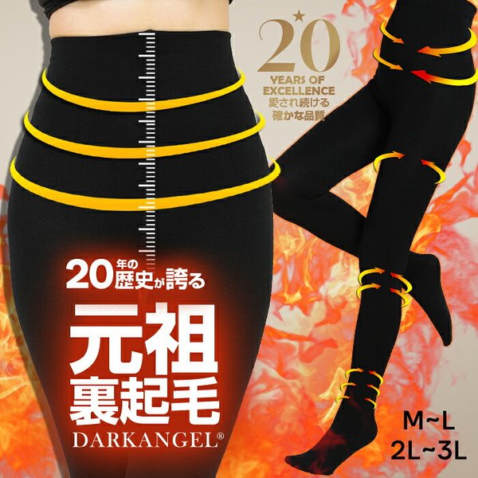
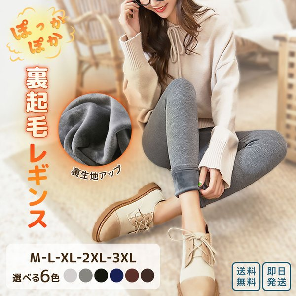
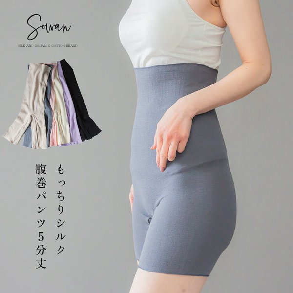
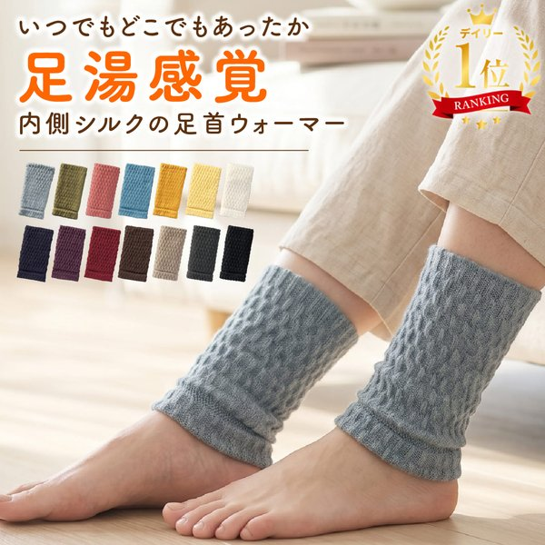
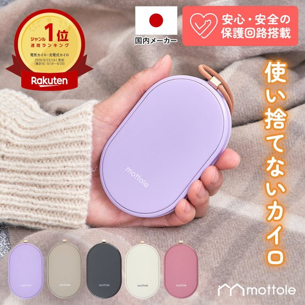
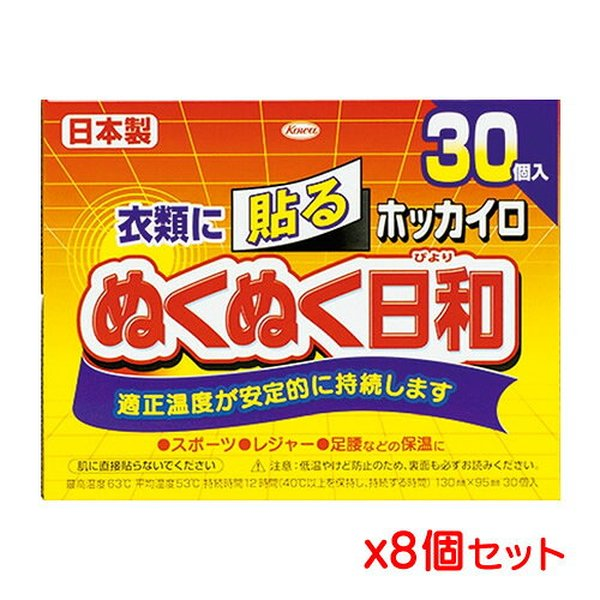
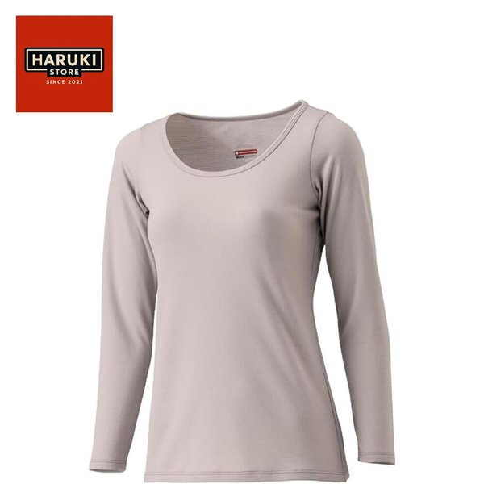
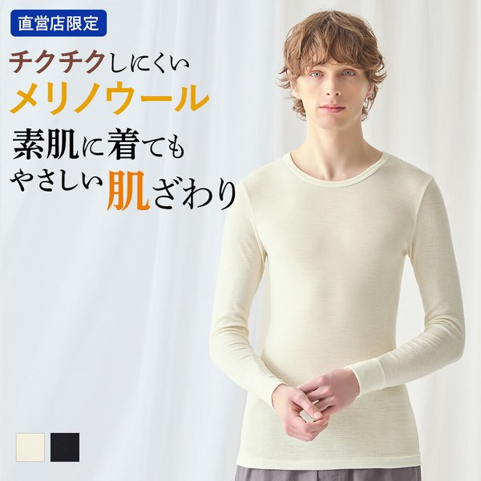

【2026年冬】着ぶくれせず芯から暖かい！最強発熱インナー・裏起毛タイツ＆防寒小物品おすすめ10選
冬の寒さは、着る枚数を増やすより、一番下に着るものを変えたほうが効きます。セーターを重ねても袖口と首元から冷気は入ってくるもので、肌に接する層が暖かいと体感温度が変わります。
選ぶ軸は、着ぶくれするかどうかと、洗い替えが効く価格かどうか。上に着る服の邪魔をしないのは薄手の発熱インナーで、真冬の屋外向けは裏起毛の厚手。脚はタイツとレギンスを分けて、スカートの日とパンツの日で使い分けると暖かさが続きます。小物は、充電式カイロと使い捨てを併用すると、外出先でも朝の冷えでも対応できます。
本記事では、楽天市場で人気・高評価の発熱インナー・裏起毛タイツ＆防寒小物10選を、実売価格とレビュー評価つきで写真付き紹介します。
- おすすめ10選 スペック・特徴比較表
- BEST 1｜極 裏起毛 長袖 丸首（メンズ・9分袖）
- BEST 2｜極暖 裏起毛 タートルネック インナー（メンズ）
- BEST 3｜元祖 裏起毛 タイツ 腹巻タイツ（レディース）
- BEST 4｜裏起毛 レギンス 10分丈（M〜3XL）
- BEST 5｜もっちりシルク 5分丈 腹巻パンツ（日本製）
- BEST 6｜温むすび シルク 足首ウォーマー（二重構造・日本製）
- BEST 7｜充電式カイロ モバイルバッテリー（MTL-E007）
- BEST 8｜ホッカイロ ぬくぬく日和 貼るレギュラー（30個入×8箱）
- BEST 9｜ブレスサーモ アンダーウェア 9分袖シャツ（レディース・薄手）
- BEST 10｜メリノウール100 長袖インナー（メンズ・CK7308）
- 【読者負担0円】買わなくても得する無料サービス
- まとめ：発熱インナー＆防寒小物10選の選び方
| 順位 | 商品名 | ブランド | 最大の特徴・おすすめ理由 | 総合評価 |
|---|---|---|---|---|
| BEST 1 | 極 裏起毛 長袖 丸首（メンズ・9分袖） | GUNZE（グンゼ） | 裏起毛で着た瞬間から暖かい | 4.56 |
| BEST 2 | 極暖 裏起毛 タートルネック インナー（メンズ） | AKUSE | 1,000円を切る価格で枚数を揃えられる | 4.64 |
| BEST 3 | 元祖 裏起毛 タイツ 腹巻タイツ（レディース） | DARK ANGEL | 腹巻一体型でお腹まで暖かい | 4.20 |
| BEST 4 | 裏起毛 レギンス 10分丈（M〜3XL） | DAILY COMPASS | M〜3XLまでサイズ展開が広い | 4.54 |
| BEST 5 | もっちりシルク 5分丈 腹巻パンツ（日本製） | SOWAN | シルク混で肌当たりがなめらか | 4.40 |
| BEST 6 | 温むすび シルク 足首ウォーマー（二重構造・日本製） | 山忠 | シルク二重構造で足首を温める | 4.54 |
| BEST 7 | 充電式カイロ モバイルバッテリー（MTL-E007） | MOTTOLE | 繰り返し使えてゴミが出ない | 4.33 |
| BEST 8 | ホッカイロ ぬくぬく日和 貼るレギュラー（30個入×8箱） | 興和 | 1個あたり約23円のまとめ買い | 4.76 |
| BEST 9 | ブレスサーモ アンダーウェア 9分袖シャツ（レディース・薄手） | MIZUNO（ミズノ） | 薄手で着ぶくれしにくい | 5.00 |
| BEST 10 | メリノウール100 長袖インナー（メンズ・CK7308） | GUNZE（グンゼ） | メリノウール100%の保温と吸放湿 | 4.63 |
極 裏起毛 長袖 丸首（メンズ・9分袖）

グンゼの「極」シリーズの裏起毛インナー。内側を起毛させた厚手の生地で、肌に触れた瞬間の冷たさが少なく、重ね着の一番下に入れると保温力が変わります。9分袖なので袖口からはみ出しにくく、シャツの下に着ても着ぶくれしにくい設計です。楽天市場での実売価格は約4,950円（2026年11月時点）。
- 裏起毛で着た瞬間から暖かい
- 9分袖で袖口から出にくい
- レビュー185件・評価4.56
- 厚手のため、ぴったりのシャツの下では窮屈に感じる
極暖 裏起毛 タートルネック インナー（メンズ）
1,000円を切る価格の裏起毛タートルネックインナー。両面を起毛させた生地で、首元まで暖かく覆えます。襟元からタートルが見える形になるので、ニットの下に着れば首元の冷えを防げます。洗い替えを何枚か揃えたい人に向いています。楽天市場での実売価格は約980円（2026年11月時点）。
- 1,000円を切る価格で枚数を揃えられる
- タートルで首元まで暖かい
- レビュー494件・評価4.64
- 価格相応で、数シーズン使うと毛玉が出やすい
元祖 裏起毛 タイツ 腹巻タイツ（レディース）

ウエストまで覆う腹巻一体型の裏起毛タイツ。お腹周りまで暖かく、ハイウエストでYラインもカバーします。1,299円と手頃で、タイツの下に重ねる下着を減らせるのが利点です。スカートやワンピースの下に1枚はいておくと、冬の外出が変わります。楽天市場での実売価格は約1,299円（2026年11月時点）。
- 腹巻一体型でお腹まで暖かい
- 1,300円以下で買いやすい
- レビュー13万件超の実績
- セール表記で価格が頻繁に変わる
裏起毛 レギンス 10分丈（M〜3XL）

裏地を起毛させた10分丈のレギンス。厚手のフリース起毛で、タイツの上に重ねても、これ1本で部屋着にもできます。Mから3XLまでサイズが広く、大きいサイズを探している人も選べます。ストレッチが効くので、しゃがむ動作の多い日も動きやすいです。楽天市場での実売価格は約1,990円（2026年11月時点）。
- M〜3XLまでサイズ展開が広い
- 10分丈で足首まで覆える
- レビュー3,797件・評価4.54
- 厚手なので、細身のパンツの下には重ねにくい
もっちりシルク 5分丈 腹巻パンツ（日本製）

シルクを織り込んだ5分丈の腹巻パンツ。締め付けの少ない設計で、寝るときにも着けたまま眠れます。日本製で肌当たりがなめらか、薄手なので重ね着の下でもかさばりません。冷えが気になる時期に、下着を1枚替える感覚で取り入れられます。楽天市場での実売価格は約2,150円（2026年11月時点）。
- シルク混で肌当たりがなめらか
- 締め付けが少なく就寝時にも使える
- 日本製・レビュー1,537件
- 薄手なので、これ1枚では真冬の外出には足りない
温むすび シルク 足首ウォーマー（二重構造・日本製）

シルクの二重構造で足首を覆うウォーマー。くるぶしから足首までを温めるだけで、冷えが気になる夜の寝つきが変わります。日本製で、就寝用としても使える肌当たりです。レッグウォーマーより短く、靴下の上から重ねてもかさばりません。楽天市場での実売価格は約1,780円（2026年11月時点）。
- シルク二重構造で足首を温める
- 寝るときにも使える
- レビュー11,799件・評価4.54
- 足首だけの丈なので、ふくらはぎの冷えには別の対策が要る
充電式カイロ モバイルバッテリー（MTL-E007）

USBで充電して繰り返し使える充電式カイロ。薄型でポケットに入り、モバイルバッテリーとしても使えます。使い捨てカイロと違い、朝に温め直しができない外出先でも、スイッチを入れれば再び温まります。1,096円と、使い捨てを買い続けるより安く済む価格です。楽天市場での実売価格は約1,096円（2026年11月時点）。
- 繰り返し使えてゴミが出ない
- 薄型でポケットに入る
- モバイルバッテリーとしても使える
- 本体を充電する時間を前日に確保しておく
ホッカイロ ぬくぬく日和 貼るレギュラー（30個入×8箱）

興和の貼るタイプの使い捨てカイロを、30個入×8箱でまとめて届けるセット。1個あたり約23円で、毎日使う人ほど割安です。衣類の内側に貼るだけで、屋外の長時間や寝る前の布団の中でも使えます。冬のあいだ切らしたくない消耗品です。楽天市場での実売価格は約5,573円（2026年11月時点）。
- 1個あたり約23円のまとめ買い
- 貼るタイプで動いてもずれにくい
- レビュー42件・評価4.76
- 240個入る収納場所を確保する必要がある
ブレスサーモ アンダーウェア 9分袖シャツ（レディース・薄手）

ミズノの吸湿発熱素材ブレスサーモを使ったレディースの9分袖インナー。薄手なので、セーターやシャツの下に着ても線が出にくいのが利点です。スポーツ用の素材だけあって動きを妨げず、通勤から軽い運動まで1枚で対応できます。楽天市場での実売価格は約2,680円（2026年11月時点）。
- 薄手で着ぶくれしにくい
- 吸湿発熱で汗をかいても暖かい
- ラウンドネックで首元がすっきり
- 薄手なので、真冬の屋外では1枚では足りない
メリノウール100 長袖インナー（メンズ・CK7308）

メリノウール100%の長袖インナー。ウールの保温性と吸放湿性で、汗をかいても蒸れにくく、冬の屋外でも室内でも快適さが続きます。チクチクしにくい加工で、肌が敏感な人でも着やすいのが利点です。1枚持っておくと、旅行や寒い日の外仕事で頼りになります。楽天市場での実売価格は約7,260円（2026年11月時点）。
- メリノウール100%の保温と吸放湿
- チクチクしにくい加工
- 日本製・レビュー48件・評価4.63
- 7,000円台で、普段のインナーより価格が高い
この記事の商品を買う前に、まずは無料で得する選択肢をチェック。どれも登録・利用は0円で、無料期間中に解約すれば料金はかかりません。読みたい雑誌がある人、ポイントを貯めたい人、アンケートなら気軽という人、それぞれに合うものを選べます。
初回31日無料・無料期間中に解約すれば0円 → 楽天ポイントモール｜登録無料で毎日ポイ活
買い物なしでもポイントが貯まる無料サービス → 楽天インサイト｜アンケートに答えてポイント
登録無料・すきま時間のアンケートで貯まる → 楽天カード｜年会費永年無料
新規発行・年会費ずっと0円 →
4つのサービスの違いと使い分けは「出費0円で得する！買わずにポイントが貯まる無料サービス厳選4選」でまとめています。
💡 まとめ：発熱インナー＆防寒小物10選の選び方
冬の防寒は、肌に接する層から整えるのが近道です。デスクワーク中心なら薄手の発熱インナーを2〜3枚、屋外で過ごす時間が長いなら裏起毛の厚手を1枚。脚は裏起毛タイツとレギンスを用途で分け、夜の冷えにはシルクの足首ウォーマーと腹巻パンツを足します。外出用には充電式カイロ、家用や布団用には貼るタイプをまとめ買いしておくと、冬のあいだ買い足さずに済みます。
楽天市場では「5と0のつく日」や「お買い物マラソン」などのキャンペーンに合わせて購入すると、ポイント還元が最大化してお得に手に入ります。ぜひチェックしてみてくださいね。